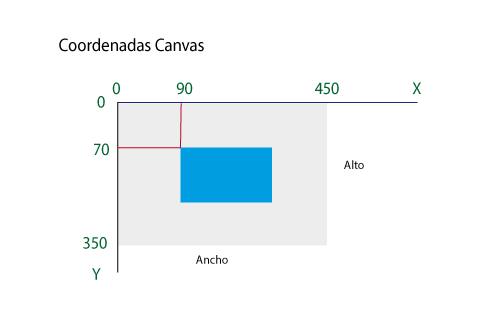

Lo primero de todos que debemos tener en cuenta es el sistema de coordenadas de los canvas. Hay que tener en cuenta que todos los dibujos que hagamos se harán respecto a la esquina superior izquierda como se ve en la siguiente imagen.

Para trabajar con canvas todo lo haremos con JavaScript.
Primero de todo debemos hacer referencia a nuestro elemento canvas y luego adquirir su contexto.
var canvas=document.getElementById('canvas');
var ctx=canvas.getContext('2d');
A continuación especificamos el color del relleno, en este caso negro:
ctx.fillStyle='#000';
Y por último le decimos qué queremos dibujar en el canvas, en este caso un rectángulo gracias al método fillRect().
La sintaxis del método fillRect es (izquierda,arriba,ancho,largo)
ctx.fillRect(0,0,canvas.width,canvas.height);
A continuación se muestra el código completo de cómo se dibuja un rectangulo negro con canvas.
//Añadimos una escucha para que una vez cargada la página comience a ejecutar la función init.
window.addEventListener('load',init,false);
//Creamos dos variables donde guardaremos nuestro canvas y nuestro contexto.
var canvas=null,ctx=null;
//Definimos la función init
function init(){
//Obtenemos nuestro canvas gracias a su identificador
canvas=document.getElementById('canvas');
//Obtenemos el contexto de nuestro canvas
ctx=canvas.getContext('2d');
//Llamamos a la función paint pasandola como argumento el contexto
paint(ctx);
}
//Definimos la función paint.
function paint(ctx){
//Indicamos el color que vamos a pintar:en este caso el negro.
ctx.fillStyle='#000';
//Dibujamos un rectangulo con el método fillRect en el que le pasamos las coordenadas x, y su anchura y su altura en este orden.
ctx.fillRect(0,0,canvas.width,canvas.height);
}
Aquí se visualiza el resultado de nuestro código:
Volver